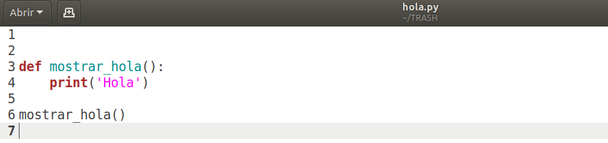
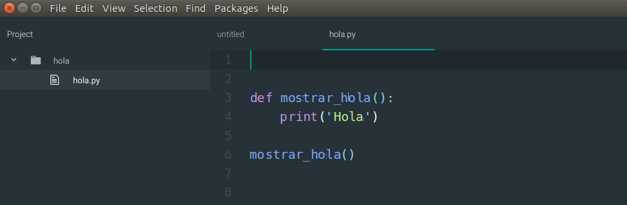

Curso de Programación para no programadores¶
¿Que es programar?¶
Programar es escribir las instrucciones necesarias para que una computadora realice alguna tarea. Las instrucciones son diferentes según el entorno donde se usan o la finalidad que se busca. Existen muchos lenguajes de programación que reflejan esa variedad. Excede a este manual definir estrictamente que es una computadora. Diremos que al nombrarla incluimos a:
- La clásica computadora que podemos tener en nuestra casa u oficina.
- Una portatil como las conocidas notebooks
- Un teléfono celular
Podemos extender lo que entendemos por computadoras agregando:
- Un lavarropas moderno en tanto que tienen programas variados en un mini-computadora interna.
- La alarma de una casa o auto que según diferentes acciones pre-establecidas dispara acciones programadas (luces y bocinas).
En general muchos electrodomésticos ya incluyen computadoras y por lo tanto programas. Estas instrucciones organizadas con alguna finalidad específica conforman lo que denominamos software.
Ejemplo¶
La computadora interna de un lavarropas que gestiona los dispositivos y conexiones internas podría tener estas instrucciones:
- Abrir el conducto de agua durante 20 segundos
- Abrir el conducto de jabón líquido 10 segundos
- Girar a velocidad normal el tambor 20 vueltas hacia la derecha
- Girar a velocidad normal el tambor 20 vueltas hacia la izquierda
- Abrir el desagote del tambor mientras gira durante 1 minuto
- Abrir el conducto de agua durante 20 segundos (para enjuague)
- Girar a velocidad normal el tambor 20 segundos
- Abrir el desagote del tambor
- Girar a velocidad rápida el tambor 2 minutos hacia la derecha
- Girar a velocidad rápida el tambor 2 minutos hacia la izquierda
- Destrabar la puerta del tambor, trabajo terminado.
¿Que hace un programador?¶
El trabajo de un programador de software es literalmente escribir instrucciones en un lenguaje de programación específico. Un programador conoce uno o más lenguajes de programación y puede desempeñarse con ellos en múltiples entornos de trabajo. Estos entornos incluyen:
- Una página web
- Una aplicación para tu celular
- Un sistema que funciona en una computadora estándar (Word, Google Chrome, Excel o cualquier programa que ves en el escritorio de tu computadora)
- Micro-sistemas que sirvan de soporte a sistemas más grandes y que no se ven
Acotar estos entornos donde un software se ejecuta es difícil, son múltiples.
¿Donde escribimos nuestro código?¶
Como dijimos programar es escribir instrucciones (las denominaremos código o código fuente). Para esto podríamos usar algún software de edición de texto pero existen herramientas específicas para esta tarea. Incluso hay editores específicos para lenguajes de programación.
Visual Studio (de Microsoft)

A estos entornos de trabajo se los conoce Entornos de desarrollo Integrado o IDE por sus siglas en inglés (Integrated Development Environment). Estas herramientas proveen funcionalidades que simplifican el trabajo de un programador